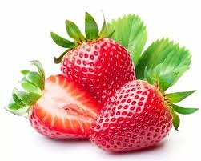
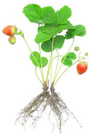

Historia de las Fresas

Las fresas han sido cultivadas durante miles de años, originándose en Europa y América. Se conocen desde la antigua Roma, aunque las fresas modernas se originaron en América en el siglo XVIII.
Desde entonces, se han cultivado de diversas formas, mejorándose tanto en sabor como en tamaño. A lo largo de la historia, las fresas han sido consideradas como símbolo de fertilidad y buena suerte.
Beneficios de las Fresas

Las fresas no solo son deliciosas, sino también muy saludables. Estos son algunos de los beneficios:
- Ricas en antioxidantes: Ayudan a combatir el envejecimiento y a mejorar la salud cardiovascular.
- Fuente de vitamina C: Promueven un sistema inmune saludable y ayudan en la absorción de hierro.
- Mejoran la digestión: Son ricas en fibra y ayudan a mantener un sistema digestivo saludable.
- Reguladoras del azúcar en sangre: Contienen propiedades que ayudan a regular los niveles de glucosa.
Cultivo de las Fresas

Las fresas se cultivan en suelos bien drenados y con buena exposición al sol. A continuación, algunos consejos para cultivarlas:
- Elige un buen terreno: Suelos ligeramente ácidos (pH 5.5 a 6.5) son ideales para las fresas.
- Riego adecuado: Las fresas necesitan riego constante, pero sin encharcar el suelo.
- Protección contra plagas: Mantén alejados insectos y hongos con tratamientos orgánicos si es necesario.
- Podas regulares: La poda adecuada ayuda a mantener las plantas saludables y mejorar la producción.